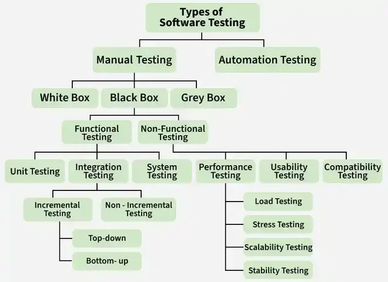

7.1–7.4 Software Testing Overview
Software testing is a process of executing a program with the intent of finding defects, verifying that requirements are met, and reducing the risk of failure in production. Testing is a core validation activity within the broader §8.3 Verification & Validation framework and occurs throughout the §2.1 SDLC, not only at the end of development.
What is software testing?
- Software testing is a systematic process of evaluating a software product to detect differences between expected and actual behaviour.
- The primary purpose is to find defects (bugs, errors, faults) before the software reaches end users.
- Testing also verifies requirements — confirming that the implemented system matches the specification and design documents.
- Testing reduces risk by exposing failures early, when they are cheaper to fix and before they cause business or safety harm.
- Testing cannot prove that software is defect-free; it can only show the presence of defects — see the seven principles in §7.4.

Testing objectives
- Find defects: Discover bugs, errors, and faults in code, design, and requirements before release.
- Build confidence: Provide stakeholders with evidence that the system works as intended under realistic conditions.
- Provide information for decisions: Supply test results that help managers decide whether to release, defer, or rework the product.
- Prevent defects: Early testing and reviews catch problems before they propagate to later phases, reducing rework cost.
- Verify requirements are met: Confirm that functional and non-functional requirements specified in the SRS are satisfied.
Testing vs Quality Assurance vs Quality Control
- Testing is a specific activity that executes software (or examines work products) to find defects and verify behaviour — it is primarily product-focused and reactive to what has been built.
- Quality Assurance (QA) is a proactive, process-oriented discipline that defines standards, procedures, and reviews to prevent defects from being introduced — see §8.1 Quality Assurance Overview.
- Quality Control (QC) is the set of activities that inspect and test the product to detect defects after development — testing is the main QC technique in software.
- QA asks "Are we following the right process?"; QC (including testing) asks "Does the product meet quality standards?"
- Testing alone cannot assure quality — a product can pass all tests yet still fail to meet user needs if requirements were wrong (a validation failure, not a testing failure).
- Verification (building the product right) and validation (building the right product) are explained in §8.3 V&V; testing supports both.
Software Testing Life Cycle (STLC)
The Software Testing Life Cycle (STLC) is a sequence of activities that govern how testing is planned, designed, executed, and closed within a project. STLC aligns with the testing phase of the §2.1 SDLC but can overlap with coding and design when test-driven or agile practices are used.
- Requirement analysis: Testers review requirements, user stories, and acceptance criteria to identify what must be tested and flag ambiguous or untestable requirements early.
- Test planning: Define scope, objectives, resources, schedule, tools, entry/exit criteria, and risk-based priorities in a test plan document.
- Test case development: Design detailed test cases, test scripts, and test data from requirements, use cases, and design specifications.
- Test environment setup: Prepare hardware, software, network, databases, and test data so the system under test can be executed in a controlled environment.
- Test execution: Run test cases, log results, report defects, and track them through to resolution and retest.
- Test closure: Evaluate exit criteria, compile test summary reports, archive artefacts, and capture lessons learned for future projects.
PROCEDURE software_testing_life_cycle(project):
// Phase 1 — Requirement Analysis
requirements = load_srs_and_user_stories(project)
testable_items = identify_testable_requirements(requirements)
flag_ambiguous_or_missing_requirements(testable_items)
// Phase 2 — Test Planning
test_plan = create_test_plan(
scope, objectives, resources, schedule, tools,
entry_criteria, exit_criteria, risk_priorities
)
APPROVE test_plan WITH test_manager AND stakeholders
// Phase 3 — Test Case Development
FOR EACH requirement IN testable_items:
test_cases += design_test_cases(requirement)
test_data += prepare_test_data(requirement)
END FOR
// Phase 4 — Test Environment Setup
environment = configure_test_environment(
hardware, software, network, database, test_data
)
VERIFY environment meets entry_criteria
// Phase 5 — Test Execution
FOR EACH test_case IN test_cases:
result = execute(test_case, environment)
IF result != expected THEN
log_defect(test_case, result, expected)
END IF
END FOR
retest_resolved_defects()
// Phase 6 — Test Closure
IF exit_criteria_met(test_plan) THEN
generate_test_summary_report()
archive_test_artefacts()
capture_lessons_learned()
ELSE
escalate_to_project_manager("exit criteria not met")
END IF
END PROCEDURESeven principles of software testing
- Testing shows presence of defects, not their absence: Passing all planned tests does not prove the software is bug-free — it only means no defects were found under those specific conditions.
- Exhaustive testing is impossible: Testing every possible input combination is infeasible for non-trivial systems; testing must be risk-based and selective.
- Early testing: Defects found in requirements or design cost far less to fix than defects found after coding or in production — test planning should start as early as possible.
- Defect clustering (Pareto 80/20): A small number of modules typically contain most defects; testing effort should concentrate on high-risk, high-complexity areas.
- Pesticide paradox: Repeating the same tests eventually stops finding new defects; test cases must be reviewed and updated regularly.
- Testing is context dependent: A safety-critical medical system requires different testing rigour, coverage, and documentation than a simple mobile game.
- Absence-of-errors fallacy: Finding and fixing many defects does not help if the system does not meet user needs — a validated but useless product is still a failure.
Testing guidelines
- Define clear testing goals: Every test cycle should have explicit objectives tied to requirements, risk areas, and release criteria.
- Design comprehensive test cases: Cover normal paths, boundary conditions, error paths, and invalid inputs — not just the happy path.
- Prepare appropriate test data: Use realistic, representative data including edge cases and invalid values that trigger error handling.
- Automate repetitive tests: Regression and smoke tests should run automatically in CI pipelines to catch regressions quickly.
- Apply multiple testing techniques: Combine white box, black box, static analysis, and reviews for broader defect detection.
- Use Test-Driven Development (TDD): Write tests before code where practicable to clarify requirements and prevent defects at unit level.
- Document test activities: Maintain test plans, cases, results, and defect logs for traceability, audit, and knowledge transfer.
- Monitor testing continuously: Track defect trends, coverage metrics, and test progress against the schedule throughout the project.
- Involve users in testing: User Acceptance Testing (UAT) and beta programmes validate that the product meets real-world needs.
- Adopt a testing framework: Standardise tools, conventions, and reporting so the team can execute and maintain tests efficiently.
Q: Define software testing and state its objectives. Distinguish testing from QA and QC. List STLC phases. State the seven principles of testing and key testing guidelines.
Model answer points:
- Testing = process to find defects, verify requirements, reduce risk; cannot prove absence of defects.
- Objectives: find defects, build confidence, inform decisions, prevent defects, verify requirements met.
- QA = proactive process focus (prevent defects); QC = product inspection (testing finds defects); testing is a QC activity.
- STLC: requirement analysis → test planning → test case development → environment setup → execution → closure.
- Seven principles: presence not absence; exhaustive impossible; early testing; defect clustering 80/20; pesticide paradox; context dependent; absence-of-errors fallacy.
- Link to V&V (§8.3): verification = built right; validation = right product built; testing supports both.
- Guidelines: clear goals, comprehensive cases, test data, automation, multiple techniques, TDD, documentation, monitoring, user involvement, framework.